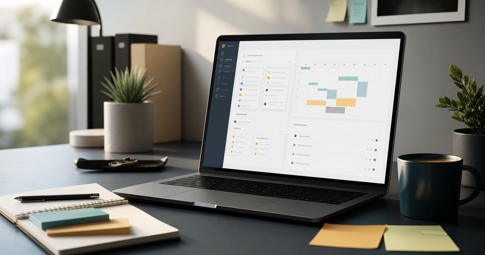
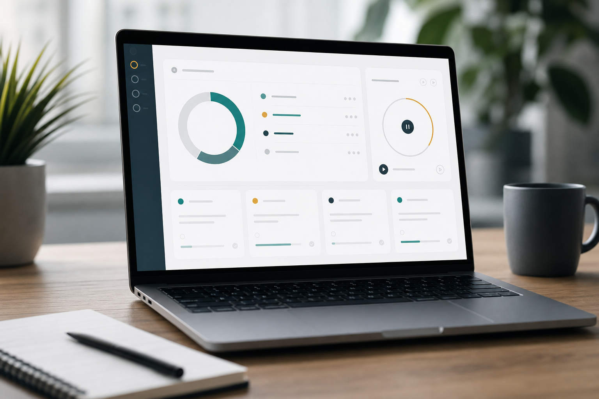
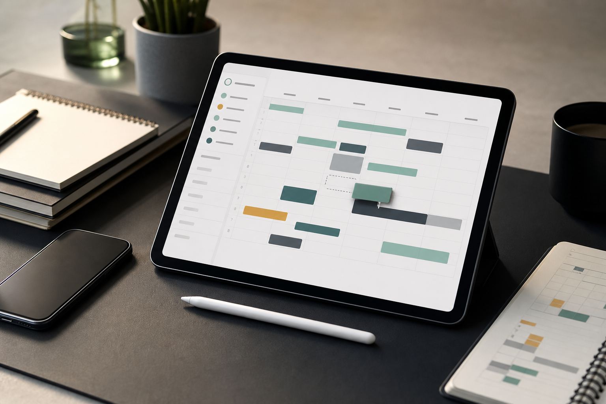
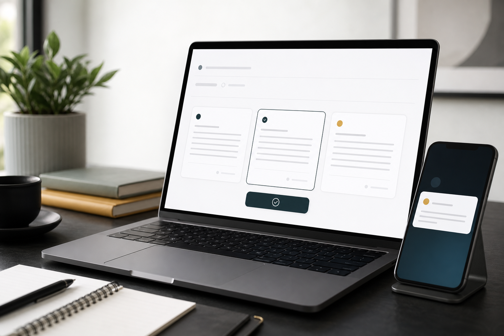

Hackathon command center
LucidSprint
A guided workspace that turns deadline pressure into a focused sprint plan, protected calendar time, and polished communication.
Built for the last 6 hours before submission
Ship the right work when the clock starts getting loud.
Capture the work, see the cognitive load, protect focus time, and turn risky deadlines into clear next actions.

01
Tell it what is wrong
Presentation late, demo broken, too many tasks, or a deadline you cannot meet.
02
Get a realistic plan
Autopilot prioritizes the queue and explains the next move without making the page noisy.
03
Act from one place
Move calendar blocks, draft an extension, and keep an audit trail for the demo.

See what is urgent, what is overdue, and what deserves attention first.

Move flexible blocks and insert a sprint for the highest-risk task.

Turn overload into a clear message that stays approval-gated.
Track what changed and what the assistant learned from the session.
Profile deadline behavior, run pre-mortems, monitor emotional velocity, and prepare work overnight.
Now
09:42
Energy
Peak focus
Mood
Autopilot
Start here
Today's operating plan
Add what you need to finish, choose your current mood, then let Autopilot decide what deserves attention first.
Cognitive Load
78
High Load
RESCHEDULE
Two deadlines are colliding with your current energy dip.
Why this score?
Autopilot is combining urgency, overdue work, duration pressure, time of day, mood, and completed tasks.
Risk factors
Work queue
Today's queue
Coach
Tell Autopilot what is blocking you
Coach Tell me what is making today feel impossible. I will triage it against your real queue.
Calendar Tetris
Make room without breaking commitments
Locked events stay protected. Flexible focus blocks can move so the highest-risk task gets a real slot.
Calendar
Protected focus plan
Move log
Run Optimize to create a plan from your current tasks and flexible events.
Deadline Negotiator
Turn overload into a clear message
Generate approval-gated drafts for the task most likely to miss its deadline.
Communication
Deadline Negotiator
Approval trail
Drafts stay local until you approve one. Calendar changes are staged first, then sent.
History and learning
What Autopilot learned from the session
Review scheduling patterns and the audit trail of every change made during the demo.
Habit DNA
Your productivity fingerprint
Presentation work starts too late
You usually begin deck tasks 93 minutes before the deadline. Autopilot now adds prep blocks the day before.
Audit trail
Proof-of-work trail
Instead of only showing AI recommendations, the app records every intervention as a small timeline judges can audit.
Lucid Lab
Behavior-aware deadline prevention
These are the differentiators: the app does not only remind you. It detects failure patterns, predicts risk, intervenes gently, and prepares useful work when you are offline.
Winning thesis
Predict failures early, prevent the spiral, prepare the next move.
LucidSprint combines behavioral signals, calendar pressure, emotional drift, social accountability, and autonomous prep work into one daily-life system.
Failure risk
--
Run scan to classify your current deadline pattern.
1. Archetype Engine
Deadline personality profile
Not scanned yet
Autopilot classifies patterns like perfectionist, overwhelmed, thrill-seeker, dreamer, avoider, or busy fool.
2. Screen Context
Permission-based context awareness
3. Pressure Cooker
Social accountability card
Stake: post a short miss report if this slips.
4. Pre-Mortem Engine
Imagine the failure, then schedule the prevention
5. Emotional Velocity
Risk from changing feelings
6. Overnight Autopilot
Asynchronous task execution
7. Conflict Graph